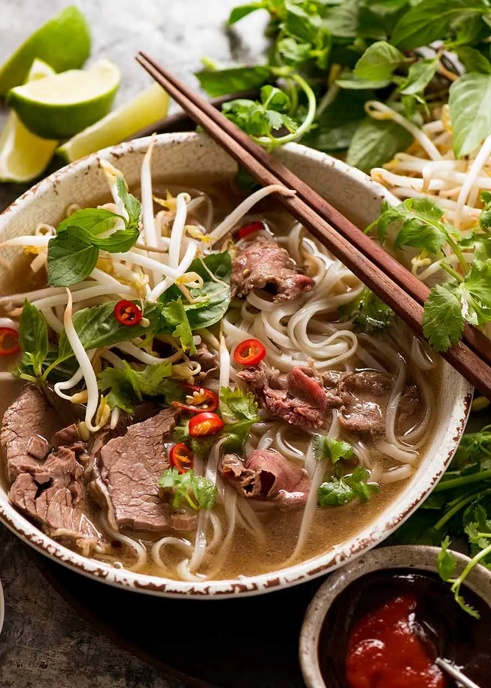

Home
Pho

Description
This recipe provides a simple way to create flavorful Vietnamese pho broth at home using store-bought broth and common pantry ingredients.
This approach simplifies the process compared to making a traditional broth from scratch, while still delivering authentic taste.
Ingredients
- Onion
- Beef broth / Chicken Broth
- Fish sauce
- Cinnamon stick
- Star anise pod
- Flat rice noodles
- Thinly sliced beef (such as flat iron or flank steak)
- Bean sprouts
- Cilantro leaves
- Lime wedges
Steps
- Combine onion, beef/chicken broth, water, fish sauce, ginger, cinnamon stick, sugar, star anise, and cloves in a large pot.
- Bring to a boil, then simmer for 30 minutes.
- Soak rice noodles in hot water until pliable, then drain.
- Strain the broth, discarding solids.
- Cook the soaked noodles in the strained broth until tender.
- Divide noodles into bowls.
- Arrange thinly sliced beef over the noodles.
- Ladle hot broth over noodles and beef to cook the beef. Garnish with reserved sliced onion, bean sprouts, cilantro, lime, hoisin sauce, and sriracha.